Rethinking how people find a place to stay
so every traveller can search by what matters to them.
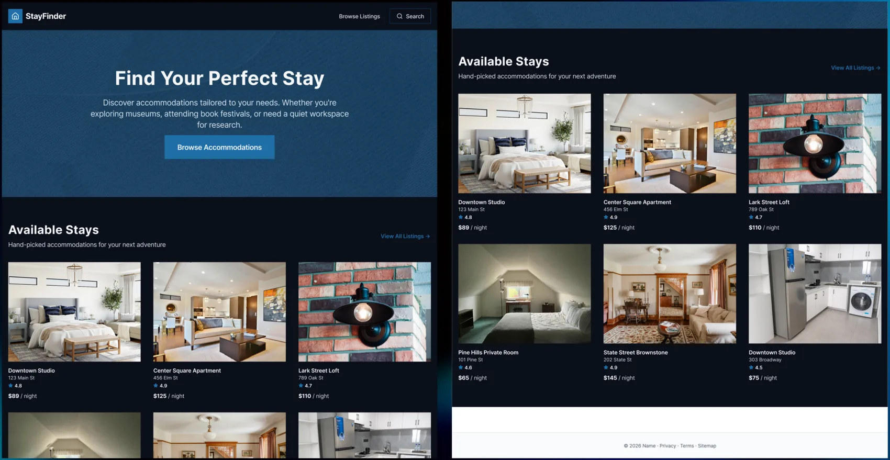
OVERVIEW
StayFinder is a concept redesign of the search experience on
short-stay booking platforms like Airbnb. I studied four very
different travellers heading to New York State, mapped how they
think and decide, and used that research to organize and design a
stay finder that helps each of them find a place that feels right.
ROLELead UX Designer
TIMELINE6 weeks
TOOLSFigma, Canva
PROBLEM STATEMENT
Booking platforms organize stays around price, ratings and dates,
but travellers choose for other reasons: a quiet place to work, a
creative atmosphere, or a neighbourhood that fits the reason for
their trip. How might we organize and present stays so different
travellers can find the right one using the things that matter to
them?
CONSTRAINTS
🧭 One platform, very different needs
Every traveller uses the same platform but wants something different: quiet and focus, creative energy, or well-organized and uncrowded places. One layout and one set of filters had to work for all of them.
📚 Designing from research, not testing
The design is grounded in persona research and established UX theory rather than testing with real users. That kept me honest about what the work shows: a well-reasoned design, ready to be tested next.
RESULT
A stay finder organized around how travellers decide
StayFinder starts with the reason for the trip. Travellers can
browse stays, then narrow them with quick filters such as museums
and cafés, parking, or near transit and books, and open a full set
of location features, amenities and property types when they want
more control.
Each listing shows what a place offers and what is nearby, so
people can judge the atmosphere and surroundings, not just the
price and rating.
01
Start from the reason for the trip
The home page speaks to different trip purposes, whether exploring museums, attending a book festival or needing a quiet place to work, then leads straight into available stays.
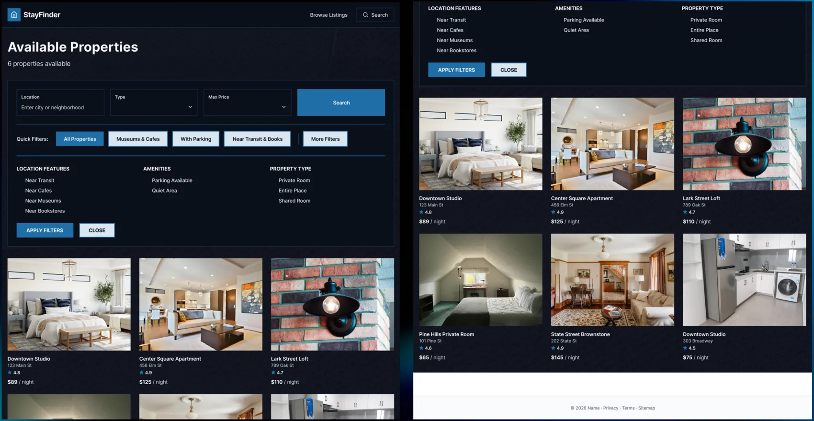
02
Filter by what matters
Quick filters and expandable groups for location features, amenities and property type let each traveller narrow the list by their own priorities, like being near transit, cafés or bookstores.
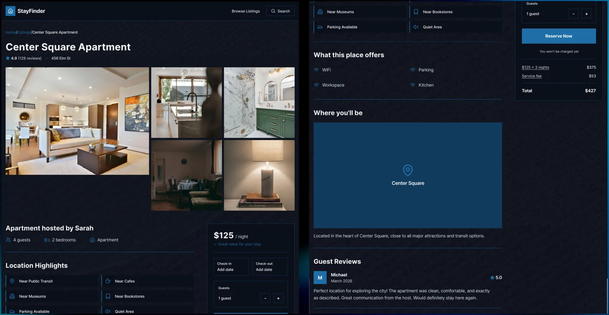
03
See the place and its surroundings
Each listing pairs photos and details with what the place offers and where it is, so travellers can picture the stay and its neighbourhood before booking.
THE PROCESS
RESEARCH INSIGHTS
Understanding how four travellers think and decide
I built four personas, Evan and Jannelle, a couple visiting
Albany, Malik, a design student exploring graduate schools, and
Evelyn, a writer attending a literary festival. For each, I
looked at their cognitive load, mental models and decision
making, using ideas from Norman, Sweller and others to understand
what overwhelms them and what they look for.
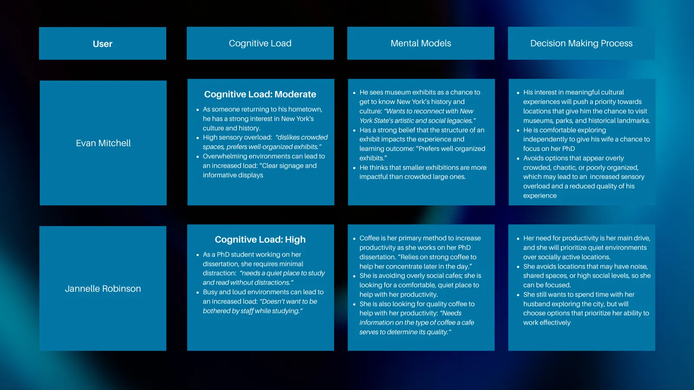
KEY INSIGHT #1
Same platform, different needs. Jannelle needs quiet, Malik wants creative energy, and Evan prefers well-organized, uncrowded spaces.
KEY INSIGHT #2
Overload shapes choices. Busy, noisy or poorly organized options raise cognitive load, so travellers avoid them.
KEY INSIGHT #3
Feeling beats numbers. Malik and Evelyn weigh atmosphere and authenticity over price, ratings or popularity.
RESULT
Designing around how each traveller decides
The research showed me that one design does not fit everyone.
Instead of asking how to make a better list of stays, I asked what
each person needs to see to feel confident choosing one. That
shaped what information the design needed to organize: quiet,
atmosphere, location and what is nearby.
USER FLOW
Adding the traveller’s needs to the booking flow
I started by mapping the existing Airbnb booking flow, then
modified it for each persona. In the new flows, travellers set
their needs up front, view matched stays, and compare what is
nearby, such as cafés, museums, transit or bookstores, before they
decide to book.
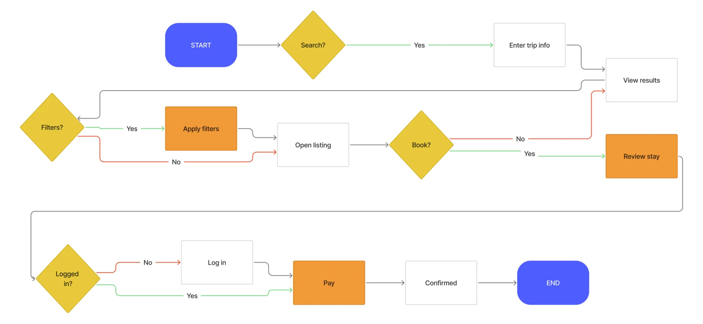
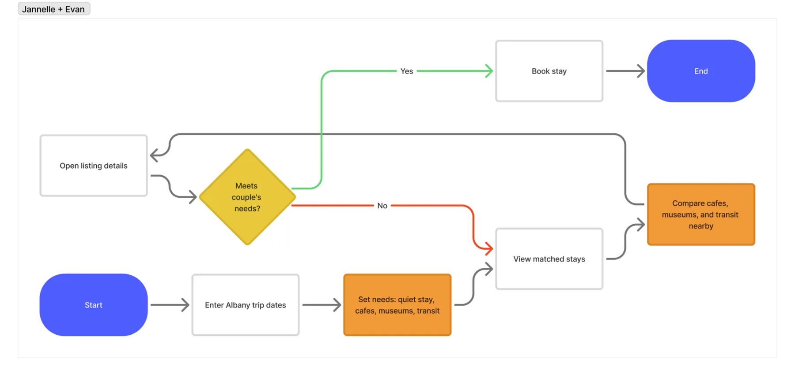
INFORMATION ARCHITECTURE
Organizing information the way people think
To organize the content, I created a taxonomy for each persona,
grouping their needs and interests into clear categories, and an
ontology that maps how those things relate, such as what a
traveller needs, prefers or avoids. This showed which details
belong together and which matter most to each person.
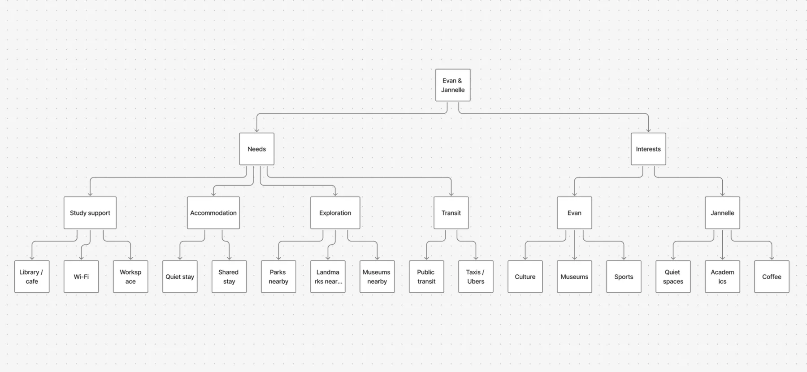
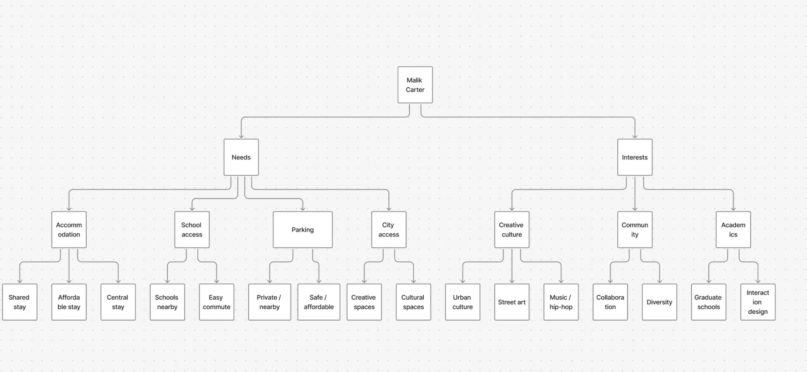
USER JOURNEY
Finding where users struggle
Journey maps for each persona followed the trip from planning to
attending, tracking their actions, emotions, goals, thoughts and
pain points. For Evelyn, the pain points were listings that
ignore cultural atmosphere and the difficulty of judging a
neighbourhood’s vibe, which became opportunities to show
walkability and atmosphere cues.
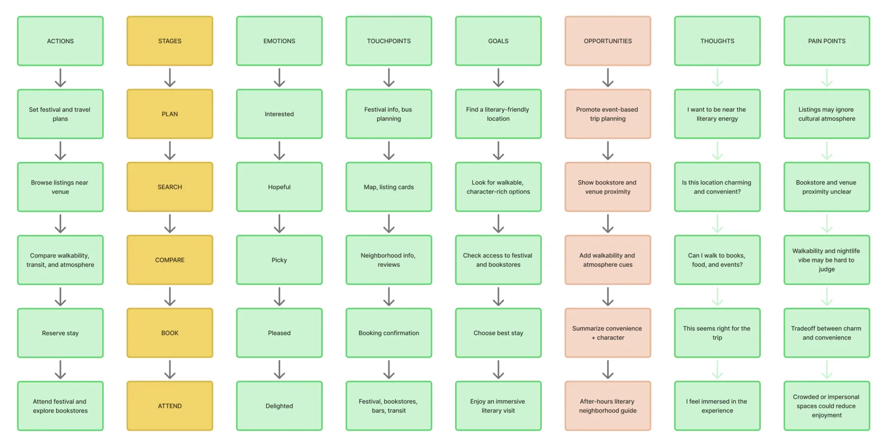
THE DESIGN
WIREFRAMES
Testing the structure in mid-fidelity
I began with mid-fidelity wireframes of the home page, the
property list with filters, and a listing page, focusing on layout
and hierarchy before any visual styling.
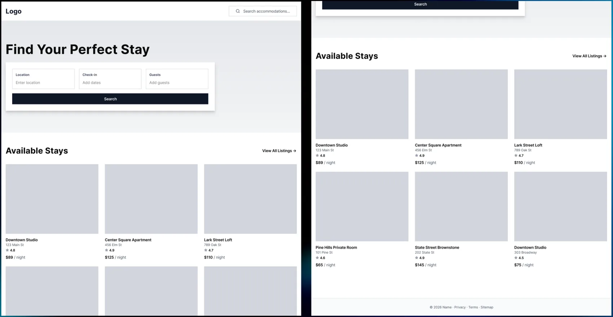
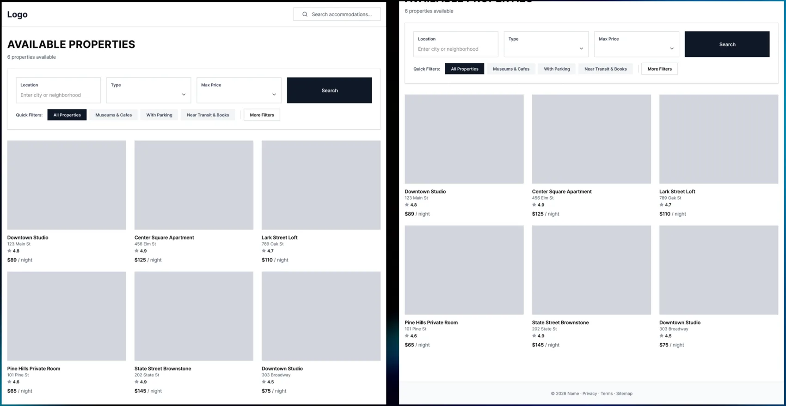
VISUAL DESIGN
A calm, focused look for browsing stays
For the high-fidelity design, I used a dark, calm interface that
lets the photography lead. Clear headings, simple filters and
generous spacing keep the page easy to scan, so the details that
matter to each traveller stand out.
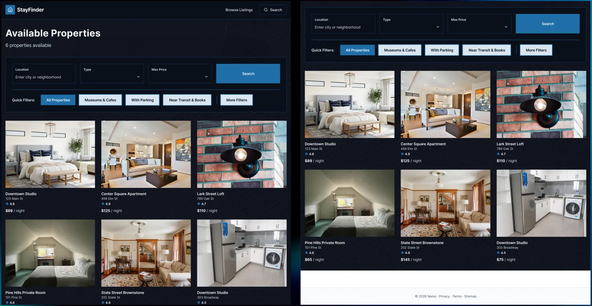
KEY TAKEAWAYS
🧠 One design does not work for everyone
Even on the same platform, each person had different needs. Organizing information around how users think, with a taxonomy, ontology and journey maps, made those differences visible.
🧪 Next, test with real users
This design comes from research and theory. If I continued, I would test it with real travellers and make it clearer and easier to use based on what I learned.
Thanks for reading
Want to see more? Take a look at my other projects.